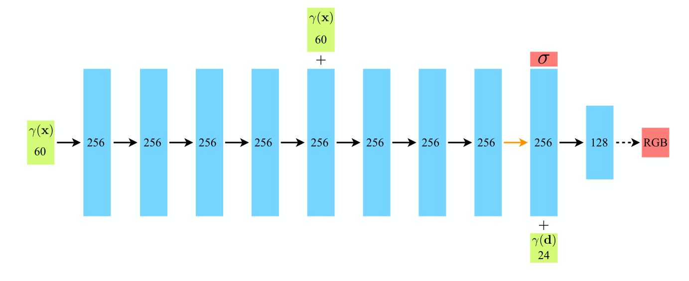
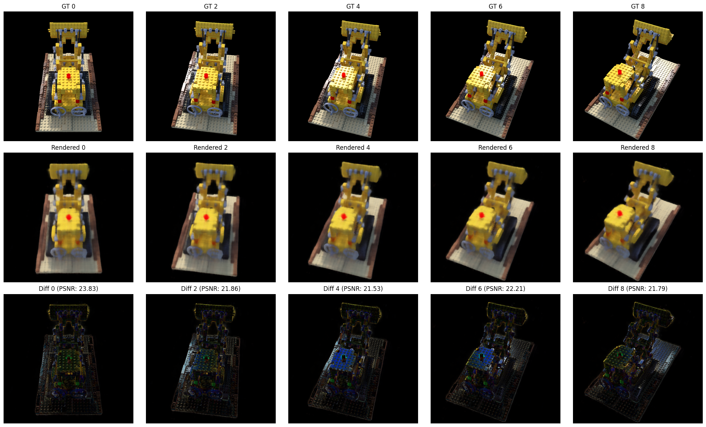

NeRF实验复现
介绍
NeRF的含义是Neural Radiance Field,即神经辐射场。通过一组拍摄静态场景的照片，NeRF可以推断场景中物体的形状和色彩。训练成功的模型可以以摄像机位置和角度为参数，清晰地还原物体的图像。
NeRF的特点在于不借助3D模型，不记忆物体的材质信息，直接对物体进行渲染。局限性在于训练速度慢，并且只能用于静态物体，难以还原镜面物体。
下面我使用Colab对NeRF的原始模型进行还原，并剖析其原理和实现方法。
基本公式
NeRF使用的是体积光渲染公式。
其中代表最终渲染的像素颜色；是从视线起点到视线终点未被吸收的概率，也就是从起始点出发的光线能够到达的比例。是体素的体密度，代表射线在这一点被介质阻挡的概率。代表体素的颜色。
其中
是从比尔-朗博定律而来：
其中代表吸光度，表示当前被吸收的光的强度， 代表透射比，与上文含义相同。为了得到，可以通过积分的方式得到，再进行换算得到。于是我们得到了上文计算的公式。
为了使得能够在计算机中计算，必须将公式进行离散化。NeRF使用的方式是等间距地取若干个射线上的点进行计算，为了避免丢失模型信息，在采样点上会随机增加偏置距离。得到：
其中代表第段的间距。可表示当前段被吸收的光强度，再通过指数函数将其映射到(0,1]区间内，从而避免出现概率溢出与梯度消失。
在实际运算中，和点的坐标、摄像机角度是已知量，模型的任务是通过点的坐标得到，并通过点的坐标和摄像机角度求得。为此，NeRF使用了一个MLP模型，即多层感知机。MLP由多个全连接层组成，每一层都有一组神经元节点和非线性激活函数。

由于实际上模型要同时拟合两类数据，一是物体的体密度，二是物体的颜色，而物体的体密度只与点的坐标有关，与摄像机方向无关，物体颜色则与两者有关。NeRF分段加入参数并获取模拟结果。在模型的前八层，模型只会获得物体坐标作为参数，在后两层则会加入摄像机角度，并最终得到物体颜色。
通过提前计算摄像机的参数，可以获得每个摄像机的世界坐标。从这些坐标发射射线，可以得到射线的坐标与该坐标在图像上的像素坐标。从而NeRF可以使用坐标计算图像像素颜色，并与原图进行对比。
NeRF采用MSE作为损失函数。其中与分别是粗略渲染与精细渲染的像素颜色。
为了让MLP更容易地学习函数特征，需要将高频参数进行低频化处理。在本实验中使用的处理方法是将坐标映射为正余弦周期函数，即
其中代表原参数。在上图中可以看到最开始输入的是长度为60的参数。这是因为原始的(x,y,z)坐标通过上述方式映射为了60维的低频参数，=10.而摄像机角度(,)映射为了24维参数，L=6. 此外，为了避免因MLP层数过深，模型遗忘了原有参数特征，还会在第五层重新加入坐标参数强化记忆。
代码编写
本次实验在Colab平台上运行，使用的是与原文相同的lego图片作为数据。由于Colab上的python版本与相关库版本均已更新，需要重新编写适用于新版本的代码。
导入数据
首先，定义文件路径并导入相机参数：
import os
import json
drive_base_path = '/content/drive/MyDrive/'
scene_name = 'lego'
nerf_synthetic_base_path = os.path.join(drive_base_path, 'nerf_synthetic')
dataset_path = os.path.join(nerf_synthetic_base_path, scene_name)
transforms_train_path = os.path.join(dataset_path, 'transforms_train.json')
transforms_val_path = os.path.join(dataset_path, 'transforms_val.json')
transforms_test_path = os.path.join(dataset_path, 'transforms_test.json')
def load_transforms_json(json_path):
if os.path.exists(json_path):
with open(json_path, 'r') as f:
transforms_data = json.load(f)
return transforms_data
else:
print(f"Error: {json_path} not found.")
transforms_train = load_transforms_json(transforms_train_path)
transforms_val = load_transforms_json(transforms_val_path)
transforms_test = load_transforms_json(transforms_test_path)
接下来定义图片的加载方法：
import imageio.v2 as imageio
import numpy as np
import os
def load_images_from_frames(frames_data, base_path, num_samples):
images = []
image_paths = []
print(f"Attempting to load {min(num_samples, len(frames_data))} images...")
for i, frame in enumerate(frames_data):
relative_image_path = frame['file_path']
if relative_image_path.startswith('./'):
relative_image_path = relative_image_path[2:]
full_image_path = os.path.join(base_path, relative_image_path + '.png')
if os.path.exists(full_image_path):
img = imageio.imread(full_image_path)
images.append(img)
image_paths.append(full_image_path)
print(f"Loaded image: {full_image_path}")
return images, image_paths
为了节省训练时间，下面对图片进行缩放。同时对图片进行归一化，以便后续计算：
import numpy as np
import cv2
original_H, original_W, _ = train_images[0].shape
target_H, target_W = original_H // 2, original_W
processed_images = []
for i, img in enumerate(train_images):
resized_img = cv2.resize(img, (target_W, target_H), interpolation=cv2.INTER_AREA)
normalized_img = resized_img.astype(np.float32) / 255.0
processed_images.append(normalized_img)
camera_angle_x = transforms_train['camera_angle_x']
focal_length_x_original = 0.5 * original_W / np.tan(0.5 * camera_angle_x)
scale_factor_w = target_W / original_W
scale_factor_h = target_H / original_H
focal_length_x_resized = focal_length_x_original * scale_factor_w
principal_point_x_resized = target_W / 2.0
principal_point_y_resized = target_H / 2.0
定义MLP
本文使用torch作为框架，下面定义的是坐标编码函数，用于将坐标转化为低频：
import torch
import torch.nn as nn
import torch.nn.functional as F
import numpy as np
def get_positional_encoding_function(L_embed):
def positional_encoding(input_coords):
freq_bands = 2.**torch.linspace(0, L_embed - 1, L_embed, device=input_coords.device)
freq_bands = freq_bands.view(L_embed, 1)
encoded = input_coords.unsqueeze(-2) * freq_bands
encoded_sin = torch.sin(encoded)
encoded_cos = torch.cos(encoded)
return torch.cat([input_coords.to(torch.float32), encoded_sin.flatten(-2, -1), encoded_cos.flatten(-2, -1)], dim=-1)
return positional_encoding
下面是MLP的核心代码：
class NeRF(nn.Module):
def __init__(self, D=8, W=256, input_ch=63, input_ch_views=27, output_ch=4, skips=[4]):
super(NeRF, self).__init__()
self.D = D
self.W = W
self.input_ch = input_ch
self.input_ch_views = input_ch_views
self.skips = skips
self.pts_linears = nn.ModuleList(
[nn.Linear(input_ch, W)] + [nn.Linear(W, W) if i not in self.skips else nn.Linear(W + input_ch, W) for i in range(D-1)])
self.views_linear = nn.Linear(input_ch_views + W, W // 2)
self.feature_linear = nn.Linear(W, W)
self.alpha_linear = nn.Linear(W, 1)
self.rgb_linear = nn.Linear(W // 2, 3)
def forward(self, x):
input_pts, input_views = torch.split(x, [self.input_ch, self.input_ch_views], dim=-1)
h = input_pts
for i, l in enumerate(self.pts_linears):
h = self.pts_linears[i](h)
h = F.relu(h)
if i in self.skips:
h = torch.cat([input_pts, h], -1)
alpha = self.alpha_linear(h)
feature = self.feature_linear(h)
h = torch.cat([feature, input_views], -1)
h = F.relu(self.views_linear(h))
rgb = self.rgb_linear(h)
return torch.cat([rgb, alpha], -1)
下面是射线生成函数与渲染函数：
def get_rays(H, W, focal, c2w):
i, j = torch.meshgrid(torch.linspace(0, W - 1, W), torch.linspace(0, H - 1, H))
i = i.t()
j = j.t()
dirs = torch.stack([(i - W * .5) / focal, -(j - H * .5) / focal, -torch.ones_like(i)], -1)
rays_d = torch.sum(dirs[..., None, :] * c2w[:3, :3], -1)
rays_o = c2w[:3, -1].expand(rays_d.shape)
return rays_o, rays_d
def raw2outputs(raw, z_vals, rays_d):
raw2alpha = lambda raw, dists, act_fn: 1. - torch.exp(-act_fn(raw) * dists)
dists = z_vals[..., 1:] - z_vals[..., :-1]
dists = torch.cat([dists, torch.Tensor([1e10]).expand(dists[..., :1].shape)], -1)
rgb = torch.sigmoid(raw[..., :3])
alpha = raw2alpha(raw[..., 3], dists, F.relu)
weights = alpha * torch.cumprod(torch.cat([torch.ones((alpha.shape[0], 1), device=alpha.device), 1.-alpha + 1e-10], -1), -1)[..., :-1]
rgb_map = torch.sum(weights[..., None] * rgb, -2)
depth_map = torch.sum(weights * z_vals, -1)
disp_map = 1./torch.max(1e-10 * torch.ones_like(depth_map), depth_map / torch.sum(weights, -1))
acc_map = torch.sum(weights, -1)
return rgb_map, disp_map, acc_map, weights, depth_map
接下来对上述函数进行整合，形成一个完整的渲染函数：
def render_rays(ray_batch,
network_fn,
network_query_fn, # Helper function to query the MLP
N_samples, # Number of samples per ray
retraw=False, # Return raw NeRF output
lindisp=False, # Sample linearly in inverse depth
perturb=0., # Add noise to sampling
N_importance=0, # Number of importance samples (for fine model)
network_fine=None, # NeRF MLP (fine)
white_bkgd=False, # Render white background
raw_noise_std=0., # Add noise to raw density
verbose=False,
pytest=False,
near=None, far=None): # Near and far bounds for sampling
N_rays = ray_batch.shape[0]
rays_o, rays_d = ray_batch[:, 0:3], ray_batch[:, 3:6]
viewdirs = ray_batch[:, -3:] if ray_batch.shape[-1] > 9 else None
bounds = ray_batch[:, 6:8]
near, far = bounds[:, 0], bounds[:, 1]
if viewdirs is not None:
viewdirs = viewdirs / torch.norm(viewdirs, dim=-1, keepdim=True)
def sample_points_on_rays_revised(rays_o, rays_d, near, far, N_samples, perturb):
t_vals = torch.linspace(0., 1., steps=N_samples, device=rays_o.device)
if lindisp:
z_vals = 1./(1./near * (1.-t_vals) + 1./far * (t_vals))
else:
z_vals = near * (1.-t_vals) + far * (t_vals)
if perturb > 0.:
mids = .5 * (z_vals[..., 1:] + z_vals[..., :-1])
upper = torch.cat([mids, z_vals[..., -1:]], -1)
lower = torch.cat([z_vals[..., :1], mids], -1)
t_rand = torch.rand(z_vals.shape, device=rays_o.device)
z_vals = lower + (upper - lower) * t_rand
z_vals = z_vals.expand([N_rays, N_samples])
points = rays_o[..., None, :] + rays_d[..., None, :] * z_vals[..., :, None]
return points, z_vals
pts, z_vals = sample_points_on_rays_revised(rays_o, rays_d, near, far, N_samples, perturb)
raw = network_query_fn(pts, viewdirs, network_fn)
rgb_map, disp_map, acc_map, weights, depth_map = raw2outputs(raw, z_vals, rays_d)
if white_bkgd:
rgb_map = rgb_map + (1. - acc_map[..., None])
ret = {
'rgb_map': rgb_map,
'disp_map': disp_map,
'acc_map': acc_map,
'z_vals': z_vals,
'weights': weights
}
if N_importance > 0 and network_fine is not None:
pts_mid = .5 * (z_vals[..., 1:] + z_vals[..., :-1])
z_samples = sample_pdf(pts_mid, weights[..., 1:-1], N_importance, det=(perturb==0.), pytest=pytest)
z_samples = z_samples.detach()
z_vals_fine, _ = torch.sort(torch.cat([z_vals, z_samples], -1), -1)
pts_fine = rays_o[..., None, :] + rays_d[..., None, :] * z_vals_fine[..., :, None]
raw_fine = network_query_fn(pts_fine, viewdirs, network_fine)
rgb_map_fine, disp_map_fine, acc_map_fine, weights_fine, depth_map_fine = raw2outputs(raw_fine, z_vals_fine, rays_d)
if white_bkgd:
rgb_map_fine = rgb_map_fine + (1. - acc_map_fine[..., None])
ret['rgb_map_0'] = rgb_map
ret['disp_map_0'] = disp_map
ret['acc_map_0'] = acc_map
ret['rgb_map'] = rgb_map_fine
ret['disp_map'] = disp_map_fine
ret['acc_map'] = acc_map_fine
ret['z_vals_fine'] = z_vals_fine
return ret
def batchify_rays(rays, chunk=1024*32):
all_ret = {}
for i in range(0, rays.shape[0], chunk):
ret = render_rays(rays[i:i+chunk])
for k in ret:
if k not in all_ret:
all_ret[k] = []
all_ret[k].append(ret[k])
all_ret = {k : torch.cat(all_ret[k], 0) for k in all_ret}
return all_ret
def render(H, W, focal, c2w, near, far, chunk=1024*32,
rays=None, verbose=False, pytest=False):
if c2w is not None:
rays_o, rays_d = get_rays(H, W, focal, c2w)
else:
rays_o, rays_d = rays
rays_o = rays_o.reshape(-1, 3)
rays_d = rays_d.reshape(-1, 3)
viewdirs = rays_d / torch.norm(rays_d, dim=-1, keepdim=True)
rays = torch.cat([rays_o, rays_d,
near*torch.ones_like(rays_o[:, :1]), far*torch.ones_like(rays_o[:, :1]),
viewdirs], -1)
all_ret = batchify_rays(rays, chunk)
for k in all_ret:
k_unflat = all_ret[k].reshape(H, W, -1)
all_ret[k] = k_unflat
return all_ret
def network_query_fn(pts, viewdirs, network_fn):
pos_enc_fn_coords = get_positional_encoding_function(L_embed=10)
pos_enc_fn_views = get_positional_encoding_function(L_embed=4)
pts_flat = pts.reshape(-1, pts.shape[-1])
viewdirs_flat = viewdirs[:, None].expand(pts.shape).reshape(-1, viewdirs.shape[-1])
embedded_pts = pos_enc_fn_coords(pts_flat)
embedded_viewdirs = pos_enc_fn_views(viewdirs_flat)
network_input = torch.cat([embedded_pts, embedded_viewdirs], -1)
raw_output = network_fn(network_input)
return raw_output.reshape(list(pts.shape[:-1]) + [raw_output.shape[-1]])
def sample_pdf(bins, weights, N_samples, det=False, pytest=False):
weights = weights + 1e-5
pdf = weights / torch.sum(weights, -1, keepdim=True)
cdf = torch.cumsum(pdf, -1)
cdf = torch.cat([torch.zeros_like(cdf[..., :1]), cdf], -1)
if det:
u = torch.linspace(0., 1., steps=N_samples, device=bins.device)
u = u.expand(list(cdf.shape[:-1]) + [N_samples])
else:
u = torch.rand(list(cdf.shape[:-1]) + [N_samples], device=bins.device)
u = u.contiguous()
inds = torch.searchsorted(cdf, u, right=True)
below = torch.max(torch.zeros_like(inds - 1), inds - 1)
above = torch.min((cdf.shape[-1] - 1) * torch.ones_like(inds), inds)
inds_g = torch.stack([below, above], -1) # (batch, N_samples, 2)
matched_shape = [inds_g.shape[0], inds_g.shape[1], cdf.shape[-1]]
cdf_g = torch.gather(cdf.unsqueeze(1).expand(matched_shape), 2, inds_g)
bins_g = torch.gather(bins.unsqueeze(1).expand(matched_shape), 2, inds_g)
denom = (cdf_g[..., 1] - cdf_g[..., 0])
denom = torch.where(denom < 1e-5, torch.ones_like(denom), denom)
t = (u - cdf_g[..., 0]) / denom
samples = bins_g[..., 0] + t * (bins_g[..., 1] - bins_g[..., 0])
return samples
模型训练
模型与相关函数均已完成定义，下面先对训练所需超参数进行定义，然后进行训练：
device = torch.device("cuda" if torch.cuda.is_available() else "cpu")
D = 8
W = 256
L_embed_coords = 10
L_embed_views = 4
input_ch_coords = 3 * (2 * L_embed_coords + 1)
input_ch_views = 3 * (2 * L_embed_views + 1)
N_samples = 64
N_importance = 128
chunk = 1024 * 4
perturb = 1.0
use_viewdirs = True
white_bkgd = True
precrop_iters = 500
precrop_frac = 0.5
lr = 5e-4
lr_decay = 250000
lr_decay_factor = 0.1
pos_enc_coords_fn = get_positional_encoding_function(L_embed_coords)
pos_enc_views_fn = get_positional_encoding_function(L_embed_views)
def network_query_fn_configured(pts, viewdirs, network_fn):
pts_flat = pts.reshape(-1, pts.shape[-1])
if use_viewdirs and viewdirs is not None:
viewdirs_flat = viewdirs[:, None].expand(pts.shape).reshape(-1, viewdirs.shape[-1])
embedded_pts = pos_enc_coords_fn(pts_flat)
embedded_viewdirs = pos_enc_views_fn(viewdirs_flat)
network_input = torch.cat([embedded_pts, embedded_viewdirs], -1)
else:
embedded_pts = pos_enc_coords_fn(pts_flat)
network_input = embedded_pts
raw_output = network_fn(network_input)
return raw_output.reshape(list(pts.shape[:-1]) + [raw_output.shape[-1]])
model = NeRF(D=D, W=W, input_ch=input_ch_coords, input_ch_views=input_ch_views if use_viewdirs else 0, skips=[4]).to(device)
model_fine = None
if N_importance > 0:
model_fine = NeRF(D=D, W=W, input_ch=input_ch_coords, input_ch_views=input_ch_views if use_viewdirs else 0, skips=[4]).to(device)
optimizer = torch.optim.Adam(list(model.parameters()) + list(model_fine.parameters()) if model_fine else list(model.parameters()), lr=lr)
import torch
import torch.nn as nn
import torch.nn.functional as F
import numpy as np
import imageio.v2 as imageio
import cv2
import time
import os
def get_rays_batch(H, W, focal, c2w, coords):
device = c2w.device
i_coords = coords[:, 0].float()
j_coords = coords[:, 1].float()
focal_tensor = torch.tensor(focal, device=device, dtype=torch.float32)
dirs = torch.stack([(j_coords - W * .5) / focal_tensor,
-(i_coords - H * .5) / focal_tensor,
-torch.ones_like(i_coords)], -1) # dirs shape: (N_batch, 3)
rays_d = torch.sum(dirs[..., None, :] * c2w[:3, :3], -1
rays_o = c2w[:3, -1].expand(rays_d.shape)
return rays_o, rays_d
training_images = []
training_poses = []
focal_resized = 0.5 * target_W / np.tan(0.5 * camera_angle_x)
for i, frame in enumerate(transforms_train['frames']):
relative_image_path = frame['file_path']
if relative_image_path.startswith('./'):
relative_image_path = relative_image_path[2:]
full_image_path = os.path.join(dataset_path, relative_image_path + '.png')
img = imageio.imread(full_image_path)
resized_img = cv2.resize(img, (target_W, target_H), interpolation=cv2.INTER_AREA)
normalized_img = resized_img.astype(np.float32) / 255.0
training_images.append(torch.tensor(normalized_img, dtype=torch.float32))
pose = np.array(frame['transform_matrix'], dtype=np.float32)
training_poses.append(torch.tensor(pose, dtype=torch.float32))
training_images = torch.stack(training_images) # (N, H, W, 4) or (N, H, W, 3)
training_poses = torch.stack(training_poses) # (N, 4, 4)
print(f"Loaded {len(training_images)} training images and poses.")
print(f"Training images shape: {training_images.shape}")
print(f"Training poses shape: {training_poses.shape}")
near_bound = 2.0
far_bound = 6.0
N_iters = 10000
criterion = nn.MSELoss()
psnrs = []
iternums = []
model.train()
if model_fine:
model_fine.train()
def get_lr(iteration, initial_lr, lr_decay, lr_decay_factor):
new_lr = initial_lr * (lr_decay_factor ** (iteration / lr_decay))
return new_lr
N_samples = 32
N_importance = 64
chunk = 1024
netchunk = 1024
def network_query_fn_configured(pts, viewdirs, network_fn):
pts_flat = pts.reshape(-1, pts.shape[-1])
if use_viewdirs and viewdirs is not None:
viewdirs_flat = viewdirs[:, None].expand(pts.shape).reshape(-1, viewdirs.shape[-1])
embedded_pts = pos_enc_coords_fn(pts_flat)
embedded_viewdirs = pos_enc_views_fn(viewdirs_flat)
network_input = torch.cat([embedded_pts, embedded_viewdirs], -1)
else:
embedded_pts = pos_enc_coords_fn(pts_flat)
network_input = embedded_pts
raw_outputs = []
for i in range(0, network_input.shape[0], netchunk):
raw_outputs.append(network_fn(network_input[i:i+netchunk]))
raw_output = torch.cat(raw_outputs, 0)
return raw_output.reshape(list(pts.shape[:-1]) + [raw_output.shape[-1]])
scaler = torch.amp.GradScaler('cuda')
start_time = time.time()
for i in range(N_iters):
if torch.cuda.is_available():
torch.cuda.empty_cache()
img_idx = np.random.randint(0, len(training_images))
target_img = training_images[img_idx].to(device)
target_pose = training_poses[img_idx].to(device)
H, W = target_img.shape[:2]
if i < precrop_iters:
dH = int(H // 2 * precrop_frac)
dW = int(W // 2 * precrop_frac)
coords_x = torch.linspace(H//2 - dH, H//2 + dH - 1, 2*dH, device=device)
coords_y = torch.linspace(W//2 - dW, W//2 + dW - 1, 2*dW, device=device)
coords = torch.stack(torch.meshgrid(coords_x, coords_y, indexing='ij'), -1)
if i == 0:
else:
coords_x = torch.linspace(0, H - 1, H, device=device)
coords_y = torch.linspace(0, W - 1, W, device=device)
coords = torch.stack(torch.meshgrid(coords_x, coords_y, indexing='ij'), -1)
coords = coords.reshape(-1, 2)
select_inds = np.random.choice(coords.shape[0], size=[chunk], replace=False)
select_coords = coords[select_inds].long()
rays_o, rays_d = get_rays_batch(H, W, focal_resized, target_pose, select_coords)
viewdirs = rays_d / torch.norm(rays_d, dim=-1, keepdim=True)
batch_rays = torch.cat([
rays_o,
rays_d,
torch.tensor(near_bound, device=device, dtype=torch.float32) * torch.ones_like(rays_o[:, :1]),
torch.tensor(far_bound, device=device, dtype=torch.float32) * torch.ones_like(rays_o[:, :1]),
viewdirs
], -1)
target_rgb_full = target_img[..., :3].reshape(-1, 3) # (H*W, 3)
rays_flat_idx = select_coords[:, 0] * W + select_coords[:, 1]
target_rgb_batch = target_rgb_full[rays_flat_idx]
with torch.cuda.amp.autocast():
ret = render_rays(batch_rays,
network_fn=model,
network_query_fn=network_query_fn_configured,
N_samples=N_samples,
perturb=perturb,
N_importance=N_importance,
network_fine=model_fine,
white_bkgd=white_bkgd)
rgb_map = ret['rgb_map']
loss = criterion(rgb_map, target_rgb_batch)
optimizer.zero_grad()
scaler.scale(loss).backward()
scaler.step(optimizer)
scaler.update()
new_lr = get_lr(i, lr, lr_decay, lr_decay_factor)
for param_group in optimizer.param_groups:
param_group['lr'] = new_lr
if i % 100 == 0:
psnr = -10. * torch.log10(loss)
print(f"[Iter {i}] Loss: {loss.item():.4f}, PSNR: {psnr.item():.2f}, LR: {new_lr:.6f}")
psnrs.append(psnr.item())
iternums.append(i)
if i % 1000 == 0 and i > 0:
checkpoint_dir = os.path.join(drive_base_path, 'nerf_checkpoints')
os.makedirs(checkpoint_dir, exist_ok=True)
path = os.path.join(checkpoint_dir, f'{scene_name}_{i:06d}.tar')
torch.save({
'iter': i,
'model_state_dict': model.state_dict(),
'model_fine_state_dict': model_fine.state_dict() if model_fine else None,
'optimizer_state_dict': optimizer.state_dict(),
'psnrs': psnrs,
'iternums': iternums,
}, path)
print(f"Saved checkpoint to {path}")
end_time = time.time()
training_duration_minutes = (end_time - start_time) / 60.0
print(f"\nTraining complete!")
print(f"Total training duration: {training_duration_minutes:.2f} minutes")
print(f"Final Loss: {loss.item():.4f}")
print(f"Final PSNR: {psnrs[-1]:.2f}")
模型评估
import torch
import numpy as np
import imageio.v2 as imageio
import cv2
import os
import json
import matplotlib.pyplot as plt
test_images_cpu = []
test_poses_cpu = []
model.eval()
if model_fine:
model_fine.eval()
def get_rays_for_full_image(H, W, focal, c2w):
device = c2w.device
i, j = torch.meshgrid(torch.linspace(0, W - 1, W, device=device),
torch.linspace(0, H - 1, H, device=device),
indexing='ij')
i = i.t()
j = j.t()
focal_tensor = torch.tensor(focal, device=device, dtype=torch.float32)
dirs = torch.stack([(j - W * .5) / focal_tensor, -(i - H * .5) / focal_tensor, -torch.ones_like(i)], -1)
rays_d = torch.sum(dirs[..., None, :] * c2w[:3, :3], -1)
rays_o = c2w[:3, -1].expand(rays_d.shape)
return rays_o, rays_d
def batchify_rays_eval(rays_flat, chunk, network_fn, network_fine, network_query_fn, N_samples, N_importance, white_bkgd, perturb=0., lindisp=False):
all_ret = {}
for i in range(0, rays_flat.shape[0], chunk):
ret = render_rays(
rays_flat[i:i+chunk],
network_fn=network_fn,
network_query_fn=network_query_fn,
N_samples=N_samples,
perturb=perturb,
N_importance=N_importance,
network_fine=network_fine,
white_bkgd=white_bkgd,
lindisp=lindisp
)
for k in ret:
if k not in all_ret:
all_ret[k] = []
all_ret[k].append(ret[k])
all_ret = {k : torch.cat(all_ret[k], 0) for k in all_ret}
return all_ret
def render_full_image(H, W, focal, c2w, near_bound, far_bound, network_fn, network_fine, network_query_fn, chunk_size, N_samples, N_importance, white_bkgd):
rays_o, rays_d = get_rays_for_full_image(H, W, focal, c2w)
rays_o_flat = rays_o.reshape(-1, 3)
rays_d_flat = rays_d.reshape(-1, 3)
viewdirs = rays_d_flat / torch.norm(rays_d_flat, dim=-1, keepdim=True)
rays_batch_all = torch.cat([
rays_o_flat,
rays_d_flat,
torch.tensor(near_bound, device=device, dtype=torch.float32) * torch.ones_like(rays_o_flat[:, :1]),
torch.tensor(far_bound, device=device, dtype=torch.float32) * torch.ones_like(rays_o_flat[:, :1]),
viewdirs
], -1)
with torch.no_grad():
rgb_outputs = batchify_rays_eval(
rays_batch_all,
chunk_size,
network_fn,
network_fine,
network_query_fn,
N_samples,
N_importance,
white_bkgd
)
rgb_map = rgb_outputs['rgb_map'].reshape(H, W, 3)
return rgb_map
import torch
import torch.nn as nn
import torch.nn.functional as F
import numpy as np
import imageio.v2 as imageio
import cv2
import time
import os
import json
import matplotlib.pyplot as plt
test_images_cpu = []
test_poses_cpu = []
nerf_synthetic_base_path = os.path.join(drive_base_path, 'nerf_synthetic')
dataset_path = os.path.join(nerf_synthetic_base_path, scene_name)
transforms_test_path = os.path.join(dataset_path, 'transforms_test.json')
def load_transforms_json(json_path):
if os.path.exists(json_path):
with open(json_path, 'r') as f:
transforms_data = json.load(f)
print(f"Successfully loaded {json_path}")
return transforms_data
else:
print(f"Error: {json_path} not found.")
return None
transforms_test = load_transforms_json(transforms_test_path)
if transforms_test:
for frame in transforms_test['frames']:
relative_image_path = frame['file_path']
if relative_image_path.startswith('./'):
relative_image_path = relative_image_path[2:]
full_image_path = os.path.join(dataset_path, relative_image_path + '.png')
if os.path.exists(full_image_path):
img = imageio.imread(full_image_path)
resized_img = cv2.resize(img, (target_W, target_H), interpolation=cv2.INTER_AREA)
normalized_img = resized_img.astype(np.float32) / 255.0
test_images_cpu.append(torch.tensor(normalized_img, dtype=torch.float32))
pose = np.array(frame['transform_matrix'], dtype=np.float32)
test_poses_cpu.append(torch.tensor(pose, dtype=torch.float32))
else:
print(f"Warning: Test image not found at {full_image_path}, skipping.")
N_samples_eval = 64
N_importance_eval = 128
chunk_size_eval = 4096
netchunk_eval = 8192
rendered_images = []
psnrs_eval = []
if len(test_images_cpu) > 0:
for i in range(len(test_images_cpu)):
if torch.cuda.is_available():
torch.cuda.empty_cache()
test_img_gt = test_images_cpu[i].to(device)
test_pose = test_poses_cpu[i].to(device)
H, W = test_img_gt.shape[:2]
rgb_map_rendered = render_full_image(
H, W, focal_resized, test_pose, near_bound, far_bound,
network_fn=model,
network_fine=model_fine,
network_query_fn=network_query_fn_configured,
chunk_size=chunk_size_eval,
N_samples=N_samples_eval,
N_importance=N_importance_eval,
white_bkgd=white_bkgd
)
rgb_map_rendered_np = rgb_map_rendered.cpu().numpy()
rendered_images.append(rgb_map_rendered_np)
mse = torch.mean((rgb_map_rendered - test_img_gt[..., :3]) ** 2)
psnr = -10. * torch.log10(mse)
psnrs_eval.append(psnr.item())
if i % 10 == 0:
num_display = min(5, len(rendered_images))
plt.figure(figsize=(num_display * 4, 12))
for i in range(num_display):
idx = i * (len(rendered_images) // num_display) if num_display > 0 else 0
plt.subplot(3, num_display, i + 1)
plt.imshow(test_images_cpu[idx][..., :3].numpy())
plt.title(f"GT {idx}")
plt.axis('off')
plt.subplot(3, num_display, num_display + i + 1)
plt.imshow(rendered_images[idx])
plt.title(f"Rendered {idx}")
plt.axis('off')
plt.subplot(3, num_display, 2 * num_display + i + 1)
diff_img = np.abs(rendered_images[idx] - test_images_cpu[idx][..., :3].numpy())
plt.imshow(diff_img)
plt.title(f"Diff {idx} (PSNR: {psnrs_eval[idx]:.2f})")
plt.axis('off')
plt.tight_layout()
plt.show()
mean_psnr = np.mean(psnrs_eval)
print(f"\nAverage PSNR across the test set: {mean_psnr:.2f}")
else:
print("Skipping evaluation and visualization as no test images were loaded.")
print("Please ensure 'transforms_test.json' exists at the specified path and contains valid data.")
可以得到结果：

注：在评估阶段，可能会出现图片翻转、空白的可能，这是因为在输出图片时错误的进行了转置，以及使用的设备不统一（cpu和gpu）。